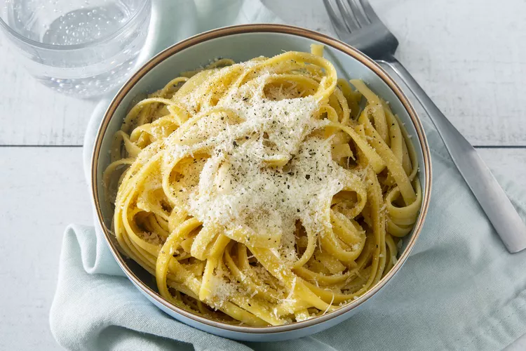

Buttered Noodle

Description
Saucy, buttered noodles are simple to make and perfect to serve either as-is or alongside steak, chicken, or
meatballs. Butter, Parmesan cheese, salt, and pepper are all you need for this quick and easy, kid-friendly
dish, although fresh herbs and a little lemon juice could be added to amp up the flavor. It's such a delicious
recipe, yet I get many questions on how to make it. allrecipes.com
Ingredients
- 1 (16 ounce) package fettuccine noodles
- 6 tablespoons butter, cut into pieces
- ⅓ cup grated Parmesan cheese
- salt and ground black pepper to taste
Directions
- Fill a large pot with lightly salted water and bring to a rolling boil. Stir in fettuccine, bring back to a
boil, and cook pasta over medium heat until tender yet firm to the bite, 8 to 10 minutes. Drain and return
pasta to pot.
- Mix butter, Parmesan cheese, salt, and pepper into pasta until evenly combined.